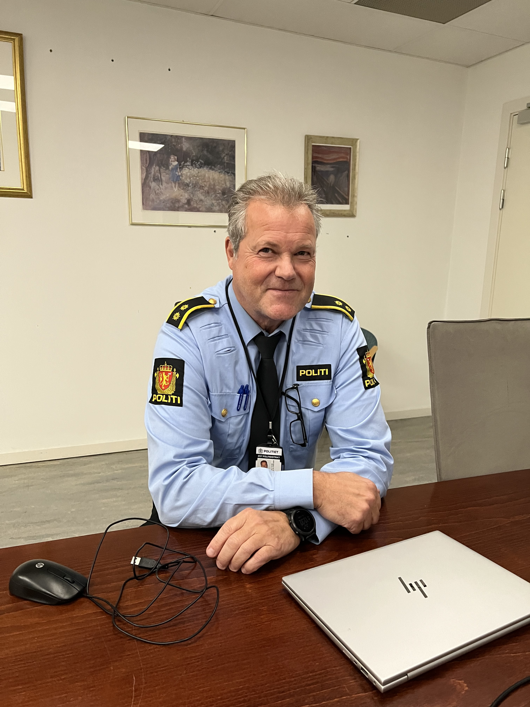
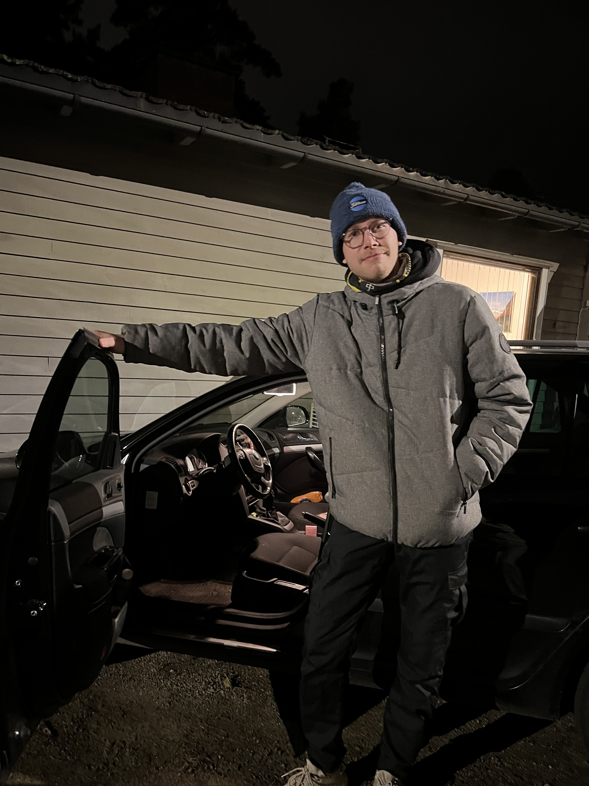
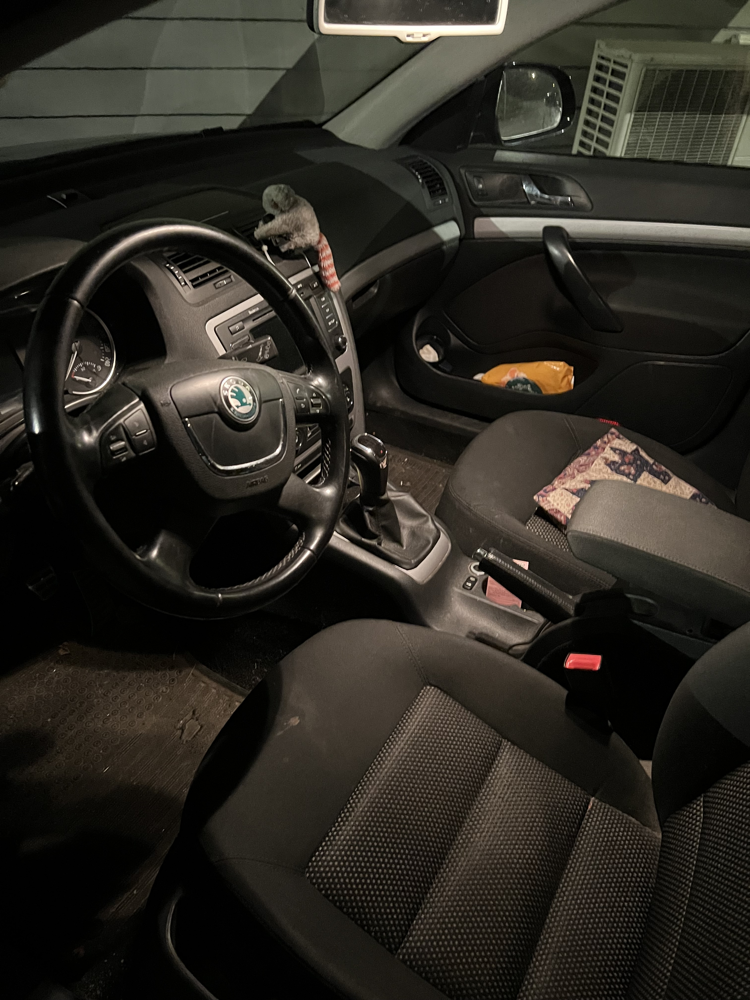
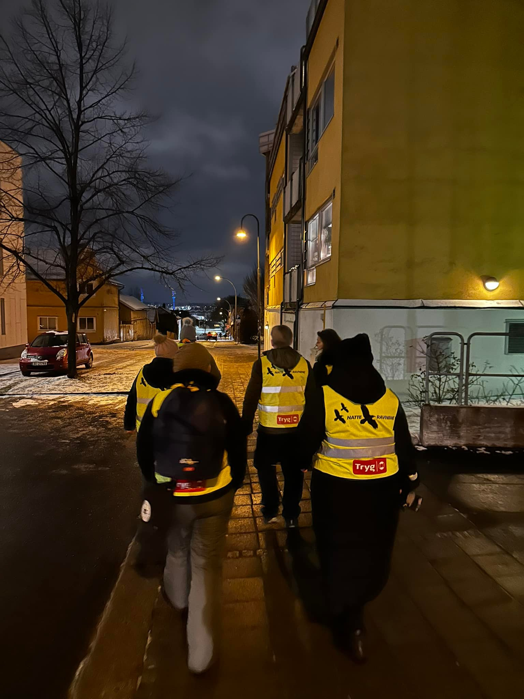
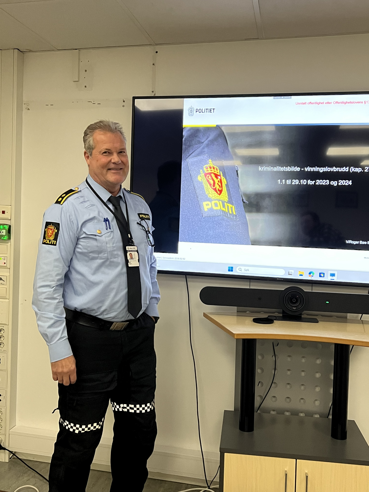

Økning i kriminalitet
Overbetjent ved politiet i Sarpsborg, Roger Bøe peker på bekymringsfulle tall. Sammenlignet med samme tid i fjor har antall vinningssaker økt med 35 prosent, fra 925 til 1148 saker hittil i år, som tilsvarer en økning på 223 forhold eller med andre ord 223 flere berørte mennesker med ubehagelige opplevelser.

- Vi ser at sentrum, Klavestadhaugen og Grålum er spesielt utsatt her i byen. Innbrudd i boliger har nærmest doblet seg i enkelte områder, forteller Bøe.
Det er særlig tyverier fra bil og grove innbrudd i boliger som utmerker seg i statistikken, og flere av sakene peker mot såkalte mobile vinningskriminelle, altså personer som reiser rundt i Norge og gjennomfører innbrudd på ulike steder langs hovedveiene før de forlater området raskt.
Samtidig har politiet også merket en økning i hærverk og skadeverk, særlig på kjøretøy, trolig gjort av de samme bande.
- Skadeverkene vi ser nå, kunne i flere tilfeller nesten vært regnet som tyveri. Det er knust ruter i biler, og i noen tilfeller blir det også rapportert om verktøy som mangler, forklarer Bøe.
I noen tilfeller oppdager bileiere ikke at noe er borte før de har levert anmeldelsen, noe som kan føre til feilaktig statistikk da disse tilfellene egentlig hadde gått under vinningssaker.
Bøe peker på en ny utfordring i politiets arbeid mot vinningskriminalitet: overgangen til nettbaserte anmeldelser. Selv om dette gjør det enklere for folk å anmelde hendelser hjemmefra, fører det også til at viktige detaljer ofte blir oversett.
- Tidligere, når folk møtte opp på stasjonen for å anmelde, kunne vi stille oppfølgingsspørsmål som avdekket flere stjålne gjenstander eller viktige spor. Nå skjer det ofte at folk oppdager manglende eiendeler først etter at anmeldelsen er sendt inn, og da blir det ikke alltid oppdatert i saken, forklarer Bøe.
- Dette kan bidra til mørketall, hvor mange tyverier og skader ikke blir registrert i statistikken, noe som igjen gjør det vanskeligere å få et helhetlig bilde av kriminaliteten i området, legger han til.
Dette illustrerer en utfordring i hvordan digitalisering av politiets tjenester kan påvirke bekjempelsen av kriminalitet.
Et område hvor kriminalitetsstatistikken også kan være misvisende, er butikktyverier. Bøe forklarer at mange butikker, særlig i Sarpsborg øst, velger å ikke anmelde tyverier, selv når de blir oppdaget.
- For butikkene er det ofte mer lønnsomt å la være enn å bruke tid på en anmeldelse som sannsynligvis blir henlagt. Dette gjelder særlig mindre tyverier, som sjokolade eller varer av lav verdi, sier han.
Politiet påpeker at disse mørke tallene kan skjule omfanget av problemet og gjør det vanskeligere å prioritere ressurser til forebygging og oppfølging i utsatte områder.
Mobile vinningskriminelle: -Profesjonelle
Som sagt tidligere, er en betydelig andel av boliginnbruddene i Sarpsborg utført av såkalte mobile vinningskriminelle – organiserte grupper fra Øst-Europa som reiser rundt og begår målrettede tyverier. Bøe beskriver hvordan disse kriminelle opererer profesjonelt, med en klar strategi for å finne verdisaker raskt.
- De vet nøyaktig hvor de skal lete, som soverom hvor smykker, kontanter og bunader ofte oppbevares. De bruker stiger for å unngå alarmer på første etasje og arbeider effektivt og lydløst, forklarer han.
Disse gruppene er vanskelige å spore og pågripe, da de ofte forlater landet kort tid etter tyveriene. Dette har ført til at politiet ikke har klart å få tak i noen av de mistenkte gjerningsmennene per dags dato.
- Det er lite kontroll ved grensen til Sverige, og mye av tvegodet blir sendt videre til ØstEuropa før vi rekker å gjøre noe. Selv når vi har opplysninger om kjøretøy og mistenkte, er det utfordrende å få tak i dem, sier Bøe.
Den manglende grensekontrollen og rask forflytning av tyvgods gjør det krevende for politiet å stanse denne typen kriminalitet. Dette viser hvordan internasjonale utfordringer spiller en stor rolle i lokal kriminalitet, og hvordan bedre samarbeid over landegrensene kan bli avgjørende for å bekjempe problemet.
Bøe peker på at Norge dessverre kan oppfattes som et lavrisikoland for vinningskriminalitet, særlig for internasjonale grupper.
- For mange av de som begår disse lovbruddene, er risikoen lav. Det er enkelt å forlate landet med tyvegods, og hvis de blir tatt, er det sjeldent at de blir utlevert. Dessuten er norske fengselsforhold betraktelig bedre enn i mange andre land, noe som ikke fungerer avskrekkende, forklarer han.
Denne kombinasjonen av faktorer gjør Norge til et attraktivt mål for organiserte kriminelle nettverk, som kan operere effektivt og forlate landet før de blir sporet.
- Det vi ofte ser er at tyvgods forsvinner raskt ut av landet, enten til Øst-Europa eller andre steder, hvor det er nærmest umulig å få det tilbake hvis det dukker opp, legger han til.
Innbrudd i egen bil
Blant de som nylig har opplevd denne bølgen av bilinnbrudd er Martin Ødegaard Imregh (32), som fikk bilen sin brutt opp utenfor sitt hjem på Kurland. Martin var hjemme med sine brødre da innbruddet skjedde.

- Innbruddet skjedde rundt klokken 9 på kvelden mens jeg og brødrene mine satt og så på TV. Jeg hørte brått noen gå på grus utenfor, men tenkte ikke så mye over det... til vi hørte at bildøren utenfor åpnet seg, forteller Imregh.
Martin sprang ut sammen med brødrene for å konfrontere gjerningsmannen, men de var for sene.
- Brodern skrek og løp etter gjerningspersonen som var 15 meter unna for å få tak i han, uten hell!, sier Martin med et lite smil rundt munn.
Selv om det ikke ble noen skader på bilen, ble noen verdisaker stjålet, inkludert en DABadapter til en 1000-lapp og et par eldre Ray-Ban solbriller.
- Det jeg ikke helt klarer å forstå er hvordan han kom seg inn i bilen i første omgang. Jeg er 110% sikker på at bilen var låst, så han må ha dirket opp døren, legger Imregh til. Når Martin rapporterte hendelsen til politiet, fikk han beskjed om at de dessverre ikke hadde noen ledige patruljebiler til å komme med en gang, og at han kunne sende inn en anmeldelse på nettet.

- Jeg er usikker på om politiet gjør nok for å forhindre slike hendelser. Jeg regner med de gjør så godt de kan, men det burde vært flere patruljer rundt omkring i Sarpsborg, spesielt med en slik krimbølge som er ute og går, sier Martin.
Manglende ressurser hos politiet
Politiet bekrefter at de må prioritere vold- og overgrepssaker fremfor vinningskriminalitet grunnet ressursmangel.
- Politiet må prioritere. Vi har hatt en prioritering hvor vi legger større vekt på vold og overgrepssaker, noe som gjør at vi ikke kan prioritere vinningssaker i like stor grad, sier Bøe.
Dette fører til at mange vinningssaker blir henlagt uten videre etterforskning, noe som gjør at flere lar være å anmelde mindre tyverier og hærverk, da det koster mer tid og energi uten resultat for den enkelte. Dette var tilfelle for Martin.
- Jeg valgte å ikke anmelde, da det er mer styr enn det det er verdt, da bilen heller ikke fikk noen skader, forklarer Imregh.
En av hovedutfordringene med å bekjempe vinningskriminaliteten i Sarpsborg ligger i rettssystemets kapasitet. Bøe forklarer at mangelen på ressurser i påtalemyndigheten fører til at mange kriminelle unngår å bli straffet, noe som kan bidra til økningen i lovbrudd.
- Vi har identifisert flere gjengangere som står bak mye av kriminaliteten, men for å kunne varetektsfengsle dem, kreves det en betydelig saksmengde mot hver enkelt. Påtalemyndigheten har imidlertid hatt så mange alvorlige saker, at mindre saker som tyveri og skadeverk dessverre blir nedprioritert, sier han.
Dette skaper en ond sirkel der kriminelle opplever liten risiko for konsekvenser, noe som kan oppmuntre til ytterligere lovbrudd.
- Dessverre ser vi at mange av de som begår vinningskriminalitet, kommer raskt tilbake på gata og fortsetter med nye lovbrudd. Det er ikke bare mangel på politifolk som er problemet, men også begrensninger i rettsapparatet og kapasiteten i fengslene, legger Bøe til.
Politiet understreker at økt fokus på ressurser til påtalemyndigheten og rettsvesenet er avgjørende for å kunne bryte denne utviklingen.
Lokale gjengangere og manglende psykiatrisk oppfølging
Blant de som begår vinningskriminalitet i Sarpsborg, peker politiet på en stor andel lokale gjengangere. Mange av disse personene har lang historikk med kriminalitet, ofte knyttet til utfordringer med rus og psykiske lidelser.
- Mange av de som begår kriminaliteten har dessverre lim på fingrene, flere av disse burde vært under oppfølging i psykiatrien, men på grunn av begrenset kapasitet får de ikke den hjelpen de trenger, forteller Bøe.
Han beskriver en vanskelig situasjon, for at disse gjengangerne skal få hjelp, må de eventuelt slippe ut personer som er tydelig preget av alvorlige problemer, potensielt farlige, eller gi gjengangerne korte opphold, noe som ikke gir varig effekt for vedkommende. Som nevnt tidligere, skyldes dette ressursmangel som fører til færre plasser til de som trenger det.
- Dette skaper en ond sirkel der de slipper ut, fortsetter med kriminelle handlinger, og skaper utrygghet i lokalsamfunnet. Det er utfordrende å forebygge kriminalitet når grunnleggende helsebehov ikke dekkes, sier han.
Bøe forklarer at politiet jobber aktivt med ulike tiltak for å begrense kriminaliteten. De samarbeider tett med kommunen, NAV, helsevesenet og sosiale tjenester for å gi disse personene langsiktig hjelp, både for å hjelpe dem ut av kriminalitet og for å beskytte lokalsamfunnet mot gjentatte lovbrudd.
Svekket trygghetsfølelse blant innbyggerne, «Ravnene» oppstår
Denne bølgen av kriminalitet har svekket trygghetsfølelsen blant flere innbyggere. Martin innrømmer at opplevelsen har gjort ham mer på vakt:
- Jeg må innrømme at trygghetsfølelsen er svekket. Før hadde jeg aldri bekymret meg for slike ting her, men nå er jeg alltid litt på vakt når jeg parkerer bilen min.
Martin påpeker også at kriminaliteten virker å være økende:
- Jeg har hørt flere historier om tyveri i SA det siste året. Det virker som om dette skjer oftere nå enn før.
Bøe bekrefter at det generelle trygghetsnivået er påvirket:
- Vi ser at innbrudd og skadeverk i folks private hjem skaper stor utrygghet. Det å få innbrudd i sitt eget hjem, i ens eget trygge rom, er svært belastende for fornærmede.
I kjølvannet av den økende kriminaliteten har det oppstått borgerinitiativer for å sikre tryggheten i lokalsamfunnet. Bøe nevner en gruppe kalt «Ravnene», en lokal organisasjon som patruljerer utsatte områder, spesielt på kvelds- og nattestid. Gruppen har fått både ros og kritikk.

- Jeg kan ikke kalle det borgervern, men de har kalt seg Ravnene. Det er viktig at slike initiativ bidrar til trygghet og ikke frykt, sier Bøe.
Han understreket at patruljering i mørke klær og hettegensere kan virke skremmende og gi motsatt av ønsket effekt.
- Om de heller brukte gule vester og gikk ut i media med sine tiltak, kunne det vært mer fornuftig og lettere å støtte.
Politiet har hatt jevnlig dialog med gruppen for å sørge for at deres innsats bidrar til trygghet uten å skape unødig uro i befolkningen.
Hva kan innbyggerne gjøre?
Martin oppfordrer andre innbyggere til å være på vakt og ta forholdsregler for å unngå å bli utsatt for tyveri.

- Mitt beste råd er å ikke la noen verdifulle eiendeler ligge synlig i bilen, selv ikke noe som virker ubetydelig. Og kanskje vurdere å parkere et synlig sted for deg og naboer, gjerne et sted med god belysning.
Politiet på sin side anbefaler at alle låser dører og vinduer og vurderer sikkerhetstiltak som kamera og lys med bevegelsessensorer. De oppfordrer også folk til å melde fra om mistenkelig aktivitet i nabolaget.
For å forebygge boliginnbrudd har politiet gått ut med oppfordringer til beboere om å sikre eiendelene sine bedre, blant annet ved å ta stiger inn og låse verdisaker i garasjer.
- Vi har prøvd å fortelle beboerne at de bør sikre eiendeler som stiger og verdisaker. Flere av tyveriene kunne kanskje vært unngått med bedre sikring.
Veien videre
Politiet og kommunen arbeider for å få mer ressurser til å håndtere denne bølgen av kriminalitet. Samarbeid på tvers av tjenester er en nøkkel for å håndtere utfordringene, men det kreves også investeringer i forebyggende arbeid og raskere oppfølging av mindre alvorlige saker for å dempe problemet. For innbyggerne i Sarpsborg er trygghetsfølelsen svekket, noe som politiet prøver å bygge opp igjen.